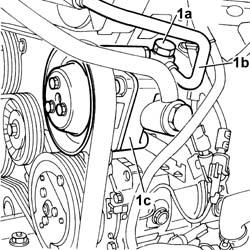
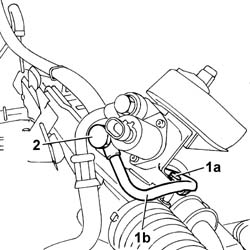
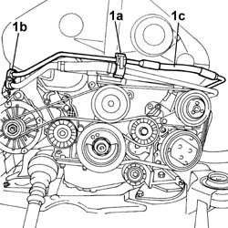
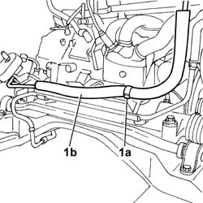
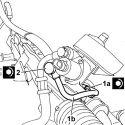
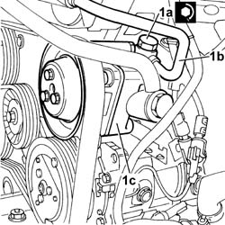

4130B47 Supply PIPE from PUMP to POWER ASSISTED STEERING BOX - R.R. with power unit removed
- Path
- Procedures > 41 STEERING > 4130 POWER ASSISTED STEERING > 4130B POWER STEERING HYDRAULIC SYSTEM > 4130B47 Supply PIPE from PUMP to POWER ASSISTED STEERING BOX - R.R. with power unit removed
- Kind
- repair procedure (removal / refitting; the operation number is the code)
- Applies to
- engines: 3.0 V6, 3.2 V6; all production periods
- Interactive page
- https://sloeber94.github.io/elrnDB-lThss/en/#/174247
Applies to: engines: 3.0 V6, 3.2 V6; all production periods
 Removing
Removing
 Refitting
Refitting1. Undo the connector (1a) for the pipe (1b) from the power assisted steering pump (1c)

Applies to: engines: 3.0 V6, 3.2 V6; all production periods
1. Undo the bolt (1a) fixing the rigid section of the supply pipe (1b) to the steering box.
2. Undo the connector for the supply pipe on the power assisted steering box.

Applies to: engines: 3.0 V6, 3.2 V6; all production periods
1. Open the bands retaining the power assisted steering pipes to the timing covers (1a) and the alternator bracket (1b), then release the supply pipe (1c).

Applies to: engines: 3.0 V6, 3.2 V6; all production periods
1. Open the retaining band (1a) at the rear of the power unit and remove the supply pipe (1b) from the pump to the steering box.

Applies to: engines: 3.0 V6, 3.2 V6; all production periods
Refitting
Removing- Position the supply pipe from the pump to the steering box and secure it closing the retaining band at the rear of the power unit.
- Position the supply pipe correctly then close the retaining bands for the power assisted steering pipes on the timing covers and on the alternator bracket.
1. Tighten the bolt (1a) fixing the rigid section of the supply pipe (1b) to the steering box to the recommended torque.
2. Tighten the connector for the supply pipe to the power assisted steering box to the recommended torque.
 | Value - daNm | Fastening | Component | Ø |
|---|---|---|---|---|
1a | 0.5 | Bolt | PIPE BTWN PUMP + POWER STEERING BOX | M6 |
| Value - daNm | Fastening | Component | Ø |
|---|---|---|---|---|
2 | 4 | Connector | PIPE BTWN PUMP + POWER STEERING BOX | M14 x1.5 |

Applies to: engines: 3.0 V6, 3.2 V6; all production periods
1. Tighten the connector (1a) for the pipe (1b) from the power assisted steering pump (1c)
| Value - daNm | Fastening | Component | Ø |
|---|---|---|---|---|
1a | 4 | Connector | POWER ASSISTED STEERING PUMP/BOX PIPE | M16 X 1.5 |

Applies to: engines: 3.0 V6, 3.2 V6; all production periods
- 0010T70